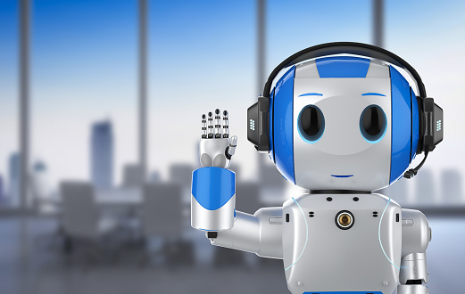

Robotics
Robotics is the branch of technology that deals with the design, construction, operation, and application of robots that can help and assist humans.
It is an interdisciplinary field that integrates computer science and engineering.
Robotics develops machines that can act like humans and do their work. Robots can be used everywhere (manufacturing, packaging, mining, weaponry…) for many purposes.
Robots have been mainly used in places where humans cannot survive such in space or underwater and also in dangerous environments for humans
for example robots are used to detect and deactivate bomb or to inspect radioactive materials.
Robotics technology can impact every aspect of work and home. Robots have the potential to transform human life both positively and negatively. The good sides are:
- Robots free people so that they can do interesting, creative work or have more family or leisure time at their disposal because robots will be doing basic, low-level tasks.
- Robots can perform jobs that humans do not want to do such planting or harvesting because it requires a great physical strength.
- Robots are more efficient than humans. They can work with better accuracy and faster, which reduce the amount of time and materials wasted and it also increases the productivity.
"Robotics is the future of humanity"
However, there is also bad side in robotics: “Machines are replacing humans in the workplace”. For example,
it has found by researchers that within an area where robots are deployed when one more robot is added, it reduces employment by six workers in that area.
Therefore, in many industries, they prefer having robots instead of people because robots can do a variety of things faster without being tired
which increase the productivity and thus people are losing their jobs.